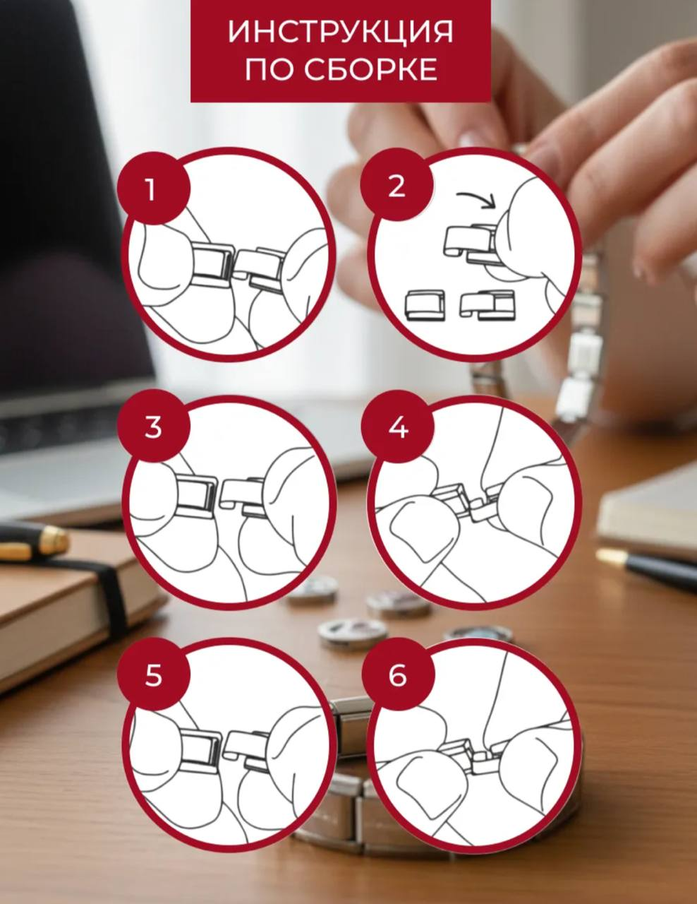

Пара минут внимания — и украшение будет радовать вас каждый день.
Как одевать и снимать звенья браслета Nomination (менее удобный способ)

Если техника правильного снятия и надевания кажется сложной, не волнуйтесь — у нас есть вспомогательное фото-руководство. Следуйте этим иллюстрациям для аккуратной работы с вашим украшением. На всякий случай!
Зафиксируйте браслет, чтобы он не сместился.
Осторожно, используя специальный инструмент или аккуратно пальцами, захватите звенья.
Медленно разъедините звенья, следя за тем, чтобы не повредить покрытие.
Чтобы надеть — повторите в обратном порядке: соедините звенья и аккуратно закрепите.
Используйте мягкую сухую или чуть влажную ткань. Никаких абразивных средств.
Для сохранения блеска аккуратно протрите поверхность мягкой микрофибровой тканью. Полировочные пасты и средства не рекомендуются.
Несмотря на защиту УФ-смолы, браслет не водонепроницаем. Избегайте намокания и длительного контакта с водой.
Храните браслет в отдельной мягкой коробке или мешочке, чтобы избежать царапин. Не оставляйте в местах с высокой влажностью или температурой.